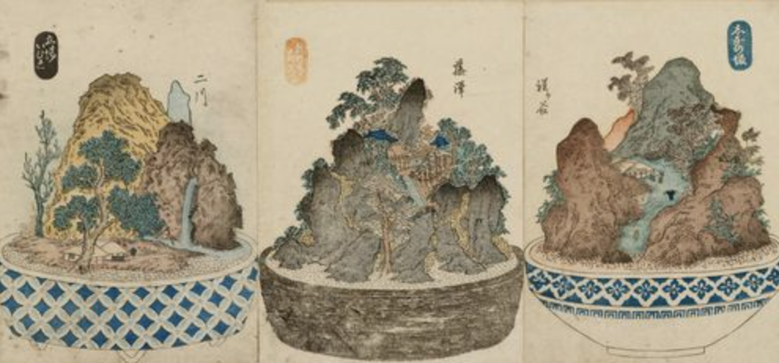
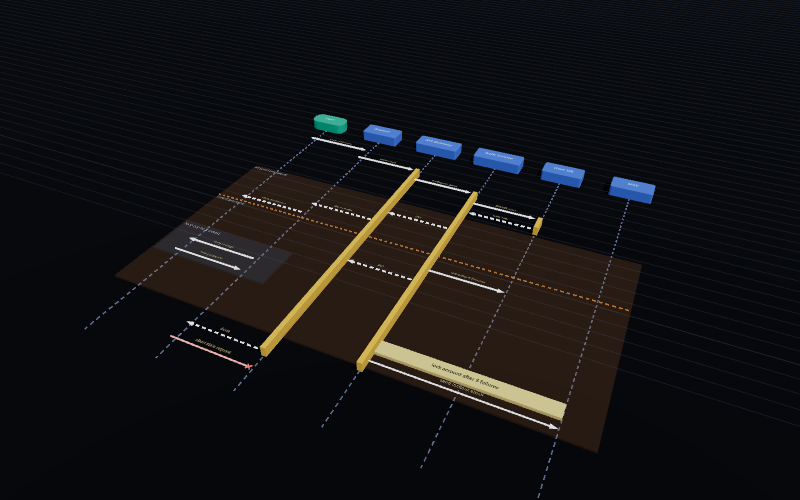

Paste the flowchart or sequence diagram you already have. Bonkei lays it out and shows it flat, isometric or in 3D, with nothing to redraw.
Your diagrams already live in READMEs and docs as Mermaid. You don't have to move them into a drawing tool: the same text becomes a 3D scene.
flowchart LR
Client --> GW[API gateway]
subgraph Services
Auth([Auth])
Orders
subgraph Billing
Invoices --> Paid{Paid?}
end
end
subgraph Data
PG[(Postgres)]
Cache([Cache])
end
GW --> Auth
GW --> Orders --> Invoices
Orders --> PG
Auth --> CacheThe camera animates between views, so you keep your place.
It reads like the Mermaid you know, for docs and screenshots.
Subgraphs become trays and nodes have depth, so you see the structure at a glance.
Orbit, zoom and fly into a subgraph to walk through a big system.
The same diagram, the same layout, a different world. Pick a built-in theme, override a few settings, or write your own. A diagram can name its theme in its own frontmatter.

Where the name comes from. Bonkei (盆景) is the Japanese art of the tray landscape: mountains, a pine, a house or two, on a shallow patterned tray. This theme is drawn from these prints.Utagawa Yoshishige, 53 Stations of the Tōkaidō as Potted Landscapes, 1848. Public domain; courtesy of Special Collections, USDA National Agricultural Library.

Lifelines lie on the ground, and messages run between them in order.
loop, alt, opt and par blocks become trays you can see at a glance.
It works on the samples. There are rough edges on large diagrams and no tests yet. If you want to help, these are good first issues:
Nothing to install. Or run it yourself:
git clone https://github.com/infinitedusky/bonkei pnpm install && pnpm dev